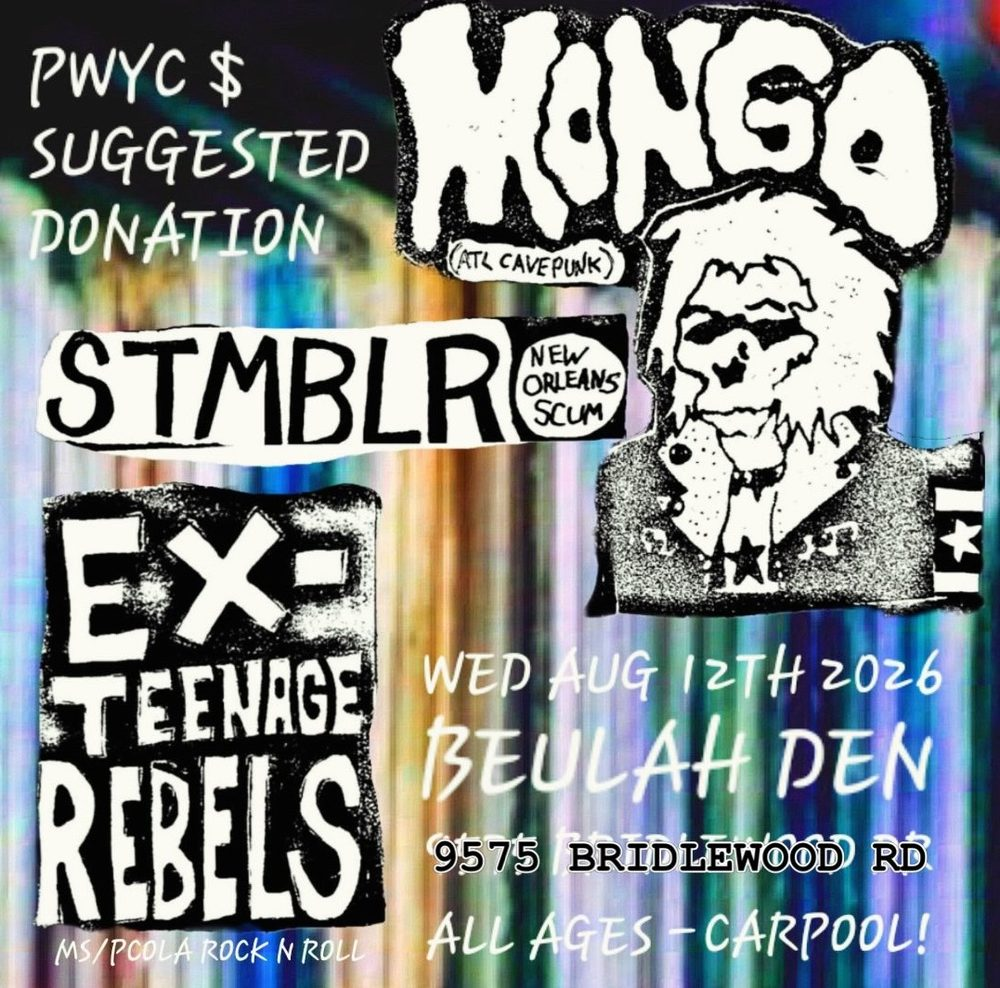

WED AUG 12from the archive
Mongo, STMBLR, Ex-Teenage Rebels
house show. dm for the address, don't bring cops.
cover was sliding scale
all ages
mongo (atl cavepunk), stmblr (new orleans scum), and ex-teenage rebels at beulah den, wednesday august 12th. all ages, pay what you can suggested donation. carpool!